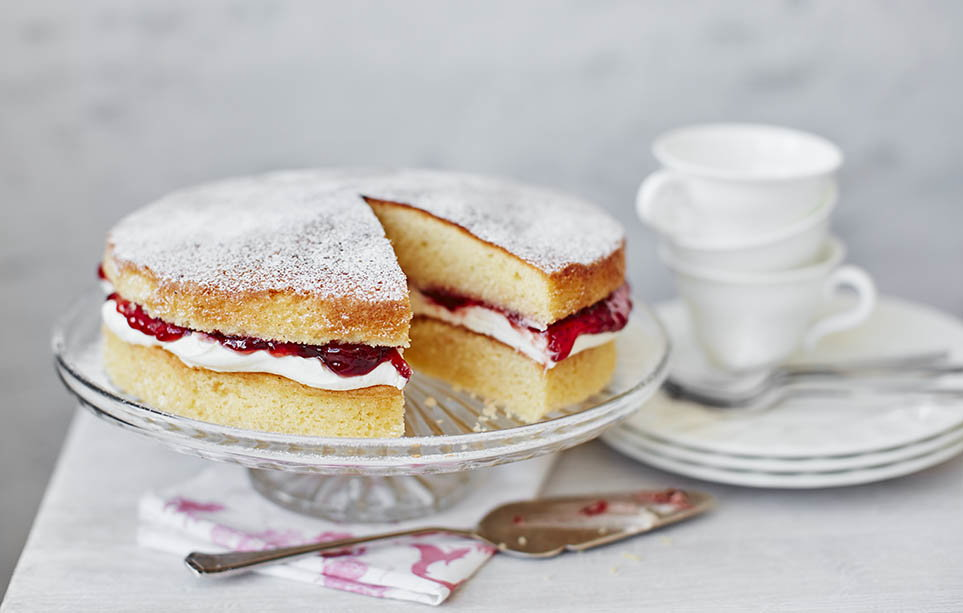

Victoria's Sponge Cake

Description
The perfect party cake, a Victoria sponge is a traditional bake everyone will love. Makes an easy wedding cake, too.
Ingredients
For the cake
- 200g caster sugar
- 200g softened butter
- 4 eggs, beaten
- 200g self-raising flour
- 1 tsp baking powder
- 2 tbsp milk
For the filling
- 100g butter, softened
- 140g icing sugar, sifted
- 1 drop of vanilla extract
- half a 340g jar of good-quality strawberry jam
- icing sugar, to decorate
Steps
- Heat oven to 190C/fan 170C/gas 5. Butter two 20cm sandwich tins and line with non-stick baking paper.
- In a large bowl, beat 200g caster sugar, 200g softened butter, 4 beaten eggs, 200g self-raising flour, 1 tsp baking powder and 2 tbsp milk together until you have a smooth, soft batter.
- Divide the mixture between the tins, smooth the surface with a spatula or the back of a spoon.
- Bake for about 20 mins until golden and the cake springs back when pressed.
- Turn onto a cooling rack and leave to cool completely.
- To make the filling, beat the 100g softened butter until smooth and creamy, then gradually beat in 140g sifted icing sugar and a drop of vanilla extract (if you’re using it).
- Spread the buttercream over the bottom of one of the sponges. Top it with 170g strawberry jam and sandwich the second sponge on top.
- Dust with a little icing sugar before serving. Keep in an airtight container and eat within 2 days.